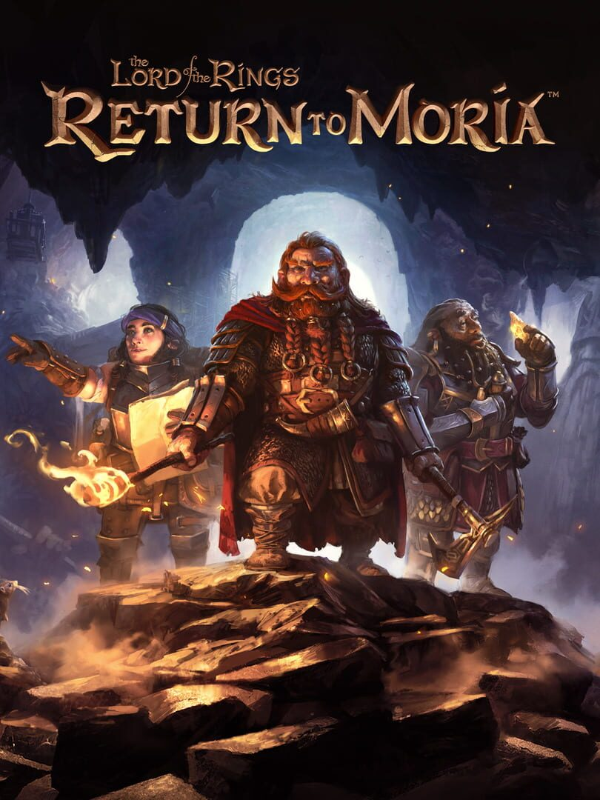

The Lord of The Rings Return to Moria
The Lord of The Rings Return to Moria
Details
|  | |
| Playtime | Not Played |
| Last Activity | Never |
| Added | 12/13/2024 0:03:32 |
| Modified | 12/13/2024 0:03:58 |
| Completion Status | Not Played |
| Library | Epic |
| Source | Epic |
| Platform | PC (Windows) |
| Release Date | 10/24/2023 |
| Community Score | 60 |
| Critic Score | 66 |
| User Score | |
| Genre | Adventure |
| Developer | Free Range Games |
| Publisher | North Beach Games |
| Feature | Co-Operative Multiplayer Single-Player |
| Links | Epic Official YouTube Discord Twitch Steam |
| Tag | [GGDeals] Synced |
Description
The Lord of the Rings: Return to Moria™ follows the Dwarves as they embark on a new adventure to reclaim their legendary home of Moria beneath the Misty Mountains. Players will join forces to survive, craft, build and explore the iconic, sprawling mines. Courageous expeditioners will need to be vigilant as mysterious dangers await.

Summoned to the Misty Mountains by Lord Gimli Lockbearer, players take control of a company of Dwarves tasked to reclaim the lost spoils from the Dwarven homeland of Moria—known as Khazad-dûm or Dwarrowdelf—in the depths below their very feet. Their quest will require fortitude, delving deep into the Mines of Moria to recover its treasures.
Set in a procedurally generated Dwarven realm of Moria, no two adventures will be alike, and every expedition is traversable either solo or co-op online with companions. Players can mine to craft greater gear and resources, but beware mining makes noise, and noise created in the quiet deep threatens to awaken the dangers below: where there’s clatter, there’s combat. Excavate the mysteries of legendary mountains, extract precious metals, scrape to survive, and battle unspeakable forces to learn the secret of the Shadow that lurks within.
• Rebuild and Reshape Moria: Restore the long-lost ancient kingdom of Khazad-dûm to its former glory, recovering Dwarven landmarks as the story progresses. Resurrect old mines and refire their forges to yield their untouched resources.
• Explore: Delve into the depths of the Mines of Moria. Procedurally generated environments are abundant with resources and fraught with mystery and danger, providing a unique experience each and every time.
• Base Building: Find solace from the darkness. Reveal and clear new locations to create architecture on a grand scale. Get creative and construct bases from scratch or build upon the existing environment. Beware the evils which seek to destroy Dwarven progress.

• Co-op Multiplayer: Adventure alone or band together with friends in online cooperative multiplayer.
• Survive the Dark: To survive the treacherous Mines of Moria players must conserve resources, hunt and gather for food and manage their sleep, temperature and noise levels. Battle unspeakable evils and survive hordes of monstrous Orcs in visceral combat, while uncovering the secret of the Shadow that looms within the mountain.
• Craft Dwarven Tools, Weapons and More: Craft and loot legendary Dwarven armor, tools, weapons and structures. Rebuild ancient forges to strengthen, repair and enchant gear. Upgrade and unlock new technologies and fantastical machines.
• Mine Ore and Jewels: Establish mines to unearth deposits of precious resources such as iron, gold, and quartz; and fantastical materials such as Mithril. Access crafting stations and forges to convert ore to ingots and upgrade gear. But be prepared, mining is loud and can awaken what lurks in the darkness.

• Uncover Magic Artifacts: Discover ancient magic items including swords that glow when Orcs are near, maps of long-dormant Mithril veins, books with forgotten crafting plans and amulets that give strength or wisdom.
• Feel the Fellowship: Experience the Fellowship of the Dwarves like never before, with the rich lore of the iconic fantasy world from J.R.R. Tolkien interwoven into the very fabric of The Lord of the Rings: Return to Moria.
• Comprehensive Dwarf Builder: Players become part of Dwarven Legend as they create their own Dwarf in the custom character creator. Dwarves can be customized in a variety of ways to create a unique Dwarven identity. During gameplay, players can find and craft armor and weapons to further enhance their unique style.
Summoned to the Misty Mountains by Lord Gimli Lockbearer, players take control of a company of Dwarves tasked to reclaim the lost spoils from the Dwarven homeland of Moria—known as Khazad-dûm or Dwarrowdelf—in the depths below their very feet. Their quest will require fortitude, delving deep into the Mines of Moria to recover its treasures.
Set in a procedurally generated Dwarven realm of Moria, no two adventures will be alike, and every expedition is traversable either solo or co-op online with companions. Players can mine to craft greater gear and resources, but beware mining makes noise, and noise created in the quiet deep threatens to awaken the dangers below: where there’s clatter, there’s combat. Excavate the mysteries of legendary mountains, extract precious metals, scrape to survive, and battle unspeakable forces to learn the secret of the Shadow that lurks within.
KEY GAME FEATURES
• Rebuild and Reshape Moria: Restore the long-lost ancient kingdom of Khazad-dûm to its former glory, recovering Dwarven landmarks as the story progresses. Resurrect old mines and refire their forges to yield their untouched resources.
• Explore: Delve into the depths of the Mines of Moria. Procedurally generated environments are abundant with resources and fraught with mystery and danger, providing a unique experience each and every time.
• Base Building: Find solace from the darkness. Reveal and clear new locations to create architecture on a grand scale. Get creative and construct bases from scratch or build upon the existing environment. Beware the evils which seek to destroy Dwarven progress.
• Co-op Multiplayer: Adventure alone or band together with friends in online cooperative multiplayer.
• Survive the Dark: To survive the treacherous Mines of Moria players must conserve resources, hunt and gather for food and manage their sleep, temperature and noise levels. Battle unspeakable evils and survive hordes of monstrous Orcs in visceral combat, while uncovering the secret of the Shadow that looms within the mountain.
• Craft Dwarven Tools, Weapons and More: Craft and loot legendary Dwarven armor, tools, weapons and structures. Rebuild ancient forges to strengthen, repair and enchant gear. Upgrade and unlock new technologies and fantastical machines.
• Mine Ore and Jewels: Establish mines to unearth deposits of precious resources such as iron, gold, and quartz; and fantastical materials such as Mithril. Access crafting stations and forges to convert ore to ingots and upgrade gear. But be prepared, mining is loud and can awaken what lurks in the darkness.
• Uncover Magic Artifacts: Discover ancient magic items including swords that glow when Orcs are near, maps of long-dormant Mithril veins, books with forgotten crafting plans and amulets that give strength or wisdom.
• Feel the Fellowship: Experience the Fellowship of the Dwarves like never before, with the rich lore of the iconic fantasy world from J.R.R. Tolkien interwoven into the very fabric of The Lord of the Rings: Return to Moria.
• Comprehensive Dwarf Builder: Players become part of Dwarven Legend as they create their own Dwarf in the custom character creator. Dwarves can be customized in a variety of ways to create a unique Dwarven identity. During gameplay, players can find and craft armor and weapons to further enhance their unique style.